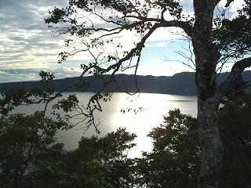

三日目を見に行く
三日目を見に行く

行きがけにも車窓から眺めた活火山「硫黄山」を眺めて、今度は透明度世界有数を誇るカルデラ湖である「摩周湖」に向かいます。
「霧の摩周湖」という歌がありましたが、ここは余程運が良くなくては全貌を眺めるなどということはできないそうで、昔来た時にホテルの人に聞いたところ、午前中はなんとか見えるかもしれないけれど、午後は霧が出てしまって見えないことが多いとのこと。
で、子供連れでもありますので阿寒湖をゆっくり目の出発になってしまい、第一展望台からは霧もなかったので摩周ブルーの湖がよく見えましたが、ちょと登って第三展望台に行った時には霧のベールに包まれてしまって、なにも見えなかったことを思い出しました。
今回訪れたのはこの時の展望台ではなく、最近隠れ人気スポットになっているという「裏摩周湖展望台」で、この摩周湖は独身の人が見ると婚期を逃すという伝説めいたものがあり、私達はもう売れてしまっているのでどうってことはないのですが、ちょっとしたデートコースになってでもいるのか、若いカップルの姿がちらほらと見かけられ、
どうか、帰り道で喧嘩しませんように…
と、祈らずにはいられませんでした。（実は、うちの子供達はしっかりと摩周湖を見ており、下の娘は覚えてないかもしれませんのでトットと嫁に行き、上の娘は覚えていたからでしょうか未だに…(-_-;)

お察しの通りこの日は湖がしっかり見え、何度も訪れているはずのバスの運転手さんまでも、展望台に上がってきていたというくらい美しい眺めで、カメラの扱いがまだ把握できていないのでこんな写真になってしまいましたが、雲に隠れた太陽の光がピンクに注いで、夢のような景観でした。
帰ってきてからＩＳＯ感度の設定変更の仕方を早速説明書で勉強したのは言うまでもありません。
養老牛温泉なんて聞いたこともない温泉地でしたが、昔 アイヌ人達が湯あみ所として利用していたと言われ、大正初年の陸地測量部作成の地図に「ヨローシ」と記されていたのを「養老趾」とされたのが後になって「養老牛」となったのだそうで、アイヌ語のエヨロシがヨローシになったのではないかという説もあり、「山が岩崖のようになって水の中に突き刺さっているところ」という意味なのだそうです。
自然に囲まれた静かな旅館で、ところどころに掛かっている手作りのパッチワークや刺し子の壁飾りが、とてもセンスが良く洒落ているんです。
中でも紺色の生地を半分グラデーションに色を抜いたところに、丸い月とフクロウを刺し子と絣生地であしらったものが素敵で、そこを通る度に立ち止まって眺めてしまいました。
昨日と同じようにYさんとの三人部屋へ案内されて、後で考えてみるとそこの女将だったのではないかと思われる人から、離れの露天風呂があると聞き、夜はカンテラを持っていくのだと言うことで、これは是非にでも行ってみなくては…と、早速お風呂に向かってみますと、どうやらお湯を入れ替えているらしく、まだ入れそうにないとのことで、普通の大浴場に行きましたが、ここにも露天風呂が作ってあり、川のせせらぎを眺めながらのんびりと疲れを癒しました。
が、どうしても外の露天風呂に入ってみたいというYさんは、元気にもお風呂のハシゴとばかりに大浴場から出ると、またもや外の露天風呂へと一人で向かいました。
昨日の夕食にはみんなして閉口しましたが、刺身、きんぴら牛蒡、陶板焼き、蕗の煮物に茶碗蒸し…と、数えてみたら１２～３品目もあり、味付けもよかったのですが食べきれませんでした。(-_-;)
Yさんという方はいつも一人で旅行をしているそうで、誰とでも気軽に話しができ、私達は昔からの友達同士のようにうち解けて、笑いが絶えません。
なんにでも興味を持ち、一人でもパワフルに活動してまわり、私達も少しは見習わねば…といいますかお尻を叩かれているような状態で、お陰様で楽しく旅行ができました。
食事が終わると、いつもなら部屋に入ってテレビを見ながらわいわいやっているところですが、この日は８時から星空ウォッチングというものがあり、持ってきたものをみんな着込んだような感じでカーディガンにウインドブレーカーを着込んで、真っ暗でなにも見えない道を旅館のバスで走ること約１０分。
月も出ていない夜に、街灯もなく対向車もなく、見えるのはヘッドライトに照らされた一部だけで、バスの側面を木の枝で引っ掻いて、バスから降ろされてみると田舎の香水がぷう～んと漂ってきて、牧場が近いことだけわかりました。
目が慣れていないうちは、それこそ誰かに鼻をつままれても誰がつまんでいるのかさえ解らないくらいでしたが、空を見上げると星が…
まるでプラネタリュウム
にでも来ているように満天に輝いており、天の川と火星くらいしかわからないのが悔しい思いでした。(>_<)
この日は夕方までかなり雲が出ており、星空ウォッチングなどはじめての私は、そんなことは何も考えていなかったのですが、あのまま雲が空を覆っていたらこの星空は見えなかったはずで、これまたラッキーでした。
寒くて途中で襟の中からフードを引っ張り出しましたが、それでも飽きずに空を見上げており、首が疲れるとちょっとぐるぐるっと回したりして、ひたすら夜空を見上げて４０分。
その間に、流れ星を一回だけ見ましたが、願い事なんて唱える間もなく視界から消えてしまいました。
バスを運転していたのは旅館のご主人で、帰りに聞いた話では、なんでも「シマフクロウ」がやって来るそうで、裏庭に２４時間態勢でビデオカメラが監視しており、パソコンを通じてその映像が何処の部屋からでもテレビで見られるようになっているとか…
ああーそういえば、テレビのチャンネルナンバーが違うのであちこちチャンネルを変えていた時に、なんだか訳の解らないものが写っているチャンネルがあった！
シマフクロウは夜中の３時ごろにやって来るそうで、最近は子連れで来ているとか…
見たいというお客さんはモーニングコールならぬミッドナイトコールで起こしてくれるということなので、私達も起こしてもらうことにしました。
すっかり身体が冷えきってしまったので、今度こそは外の露天風呂へ行こうとなり、フロントでカンテラを借りてＭさんとＹさんが先に行き、もたもたしていた私は真っ暗闇の中を露天風呂まで行かなくてはならなくなってしまいましたが、お風呂上がりのくつろぎルームのようなところから外に出ると、履き物が何足か置いてあり、柱に掛けてある札を「使用中」にしておけば他の人が入ってはいけない（覗きには行ってもいいのだろうか？＾＾；）ことになっています。
裏庭はフクロウが来やすくするためか灯りはほとんどありません。
まさかこんなに暗いとは思ってもみなかったので、足元がどんな状態なのかもわからないまま、まるで泥棒のように抜き足差し足忍び足…なんて感じでやっと脱衣所になっている小屋にたどり着きましたが、こんなに暗くてはぱんつを落としでもしたらもうみつけられないとばかりに、カンテラをしばらく拝借しまして、着ているものを脱ぐだけということなのに、見えないということはこんなにも大変なことだったのか…とあらためて見えることのありがたさを知りました。
大小の石を合わせて作られたお風呂は三人が手足を伸ばしても十分な広さがあり、灯りはかろうじて足場が見えるかな？というくらいな小さな白熱灯とでもいうんでしょうか？（間違っているかもしれません）そんなものが二つ置いてあり、建物側から一段と下がった場所にあるので、こちらからは枝を広げた木々とそれほど大きくない川が見えるだけで、熊やら猿やらが温泉に入りに来ても不思議ではなさそうな雰囲気です。
お湯はすでに胸のところくらいまで入っており、 「こんなんじゃないわよぉ！」 と、Ｙさんは夕方に入りに来た時にいかにして少ないお湯でお風呂に入っていたかを話して聞かせます。
「お湯が１０㎝も入ってなかったのよぉ…」
って、想像できます？(-_-;)
「普通はそんなお風呂に入ろうと思わないんじゃないの？」
と、三人で大笑い。
「ほっほっほっほっ…」
「こんな格好して寝そべってみたり、上向いて寝ころんでみたり、なんとかお湯に浸かろうと一人でいろいろやってたのよー(>_<)」
実演付きで、Yさんはその時の入浴ポーズの様々を披露して、私達はもう可笑しくて笑いが止まりません。
「ほっほっほっほっ…」
空を見上げると、ここからでもきれいな星空が木々の間から見え、ラッキー続きの一日で本当によかったけど、蚊が多いのは思いもしなかった…今度から湿原に行く時は虫除けスプレーと虫刺されの薬を忘れずに持っていかなっくっちゃね（＞＜…と、また笑い。
「ほっほっほっほっ…」
「ね、ねえ ねえ…」
ふとあることに気付いた私は、
「もしかして…鳴いてない？」
「さっきから鳴いてるねぇ」
と、MさんもYさんもこともなげに答えますが、
「エエー！！二人とも気が付いてたの？」
私達が笑うたびに聞こえてくるあの「ほっほっほっほっ…」は…
近くにフクロウが来てるんです。
そして私達の話を聞いて笑っている…（それはない！ない！）
「ほっほっほっほっ…」はちょっと違うんですが、フクロウの鳴き声としてよくテレビなどで耳にしているような「ほう！ほう！」でもなく、低い不気味な鳴き声は
「もしかしたら、オオカミかも!」
「山の中だからいてもおかしくないかも！」
またまた私達が笑うと、フクロウの笑い声が…(違うって
さすがに気味が悪くなり、早々に部屋へ戻ってきましたが、カンテラをフロントに返しに行ったYさんがなかなか戻ってこないので、あの人のことだからロビーで誰かと話しでもしているのだろうと思っていると、
「フクロウをみつけた!!木の上から飛んでいった」とかなり興奮気味な口調であわただしく部屋に帰って来まして、「どれどれ」と立ち上がったＭさんと二人でまた部屋を出ていきました。
本当にこまめな人で、しばらくするとまた部屋へ戻ってきまして、
「いるよ! いるよ!」とわざわざ私も呼びに来ていただき、今度は私も部屋を飛び出し、夜露に濡れた草に下駄履きの足を濡らしながら、玄関横から敷地内を川べりまで行くと、目が慣れていない間はなにも解らなかったのですが、確かに木の上にいます。
それにしても…灯りも何もないところでよくみつけられたものだと感心しながらも、木の上にじっとしているフクロウを眺めていますが、あちらも「なんだ？なんだ？」とばかりにこちらを眺めてでもいるのか、じっと動こうとしません。
「あ！」 大きな羽を広げてフクロウが私達の目の前を通り過ぎて、旅館と反対の方向にあたる川下に向かって音もなく飛び去りましたが、すぐ近くの木の枝か川の向こう側に降りたように見え、私達は根気よくそこで待ちましたがなんの音沙汰もなく、そこからも星がきれいに見える空を見上げながら、 更に待ちましたが、さすがに寒くなって部屋に帰ることにしました。
「もしかしたら、案外部屋の前に来ているかも…」
などと冗談を言いながら部屋に帰ってきまして、テレビのスイッチを入れ、例のあのチャンネルを探して見ていたＭさんが小声で、
「ちょっとお…」
うっそぉー!!ですよ。
まったくいくらラッキー続きの一日だからって、そこまであり？
フクロウに感づかれないように部屋の電気を消して、窓の側にそおっと近付いてみると…
旅館のご主人に聞いたところによりますと、大人が座っている座高の高さくらいはあるとのことで、そこまで大きいものかどうかはいまいち解りませんが、確かにでかいフクロウが池の側の止り木のようなところに、こっちを向いて留まっています。
「大きいね…」
暗闇の部屋で、三人揃って窓の外を眺めながら、小声で話していますと、Yさんはもうじっとしていられないようで部屋を飛び出し、外からそおっと窓のところまでやって来まして、そろり そろりと移動をして行き、あれ あれ？どうするんだろう…と息をひそめて見ていますと、彼女は少しずつ 少しずつフクロウに近付き、なんと「こんばんわ」とお辞儀をしながら挨拶をしたのです。
フクロウは、
「え！ なにこの人間？」
と、思いがけない人間に挨拶をされてビックリして、２Mはありそうな翼を広げるが早いかまたもや音も立てずに飛び去りました。
「見た？ 見た？ 私フクロウに『こんばんわ!』って挨拶したんだよ！ b(*^_^*)d 」
「カメラの前を横切ってるから、バッチリ証拠が残ったからね…(^_^;)」
「今度からは、よい子はマネをしないようにしましょうって、ビデオ画面に出るよ…(>_<)」
Yさんが興奮した面持ちで部屋に帰って来た時のそれぞれの第一声です。
感動です。
今や絶滅の危機に瀕しているという、あのシマフクロウが自然のままの姿をこんなに間近で見られるなんて…もう 大感激デス。
フクロウはその後もやって来て、双眼鏡で見ていると、じいっと周りの様子を伺っているように顔だけは時折動かしたりしていましたが、いきなりジャボン！と池の中に飛び込んだかと思うと、どうやら魚を捕まえたらしくそのまますぐに止り木に戻り、そこで食べてはまたじっとして…とこれを何度か繰り返していましたが、そんな時に限ってYさんはお風呂に行っていたりして、帰ってきた時には是非みたいと言って、眠いながらも一人頑張って窓と布団の間を行ったり来たり…
Ｍさんと私は疲れも手伝って、すやすやと夢の世界へと入っていきました。
作成:2004-09-29
コメントはこちら
三日目を見に行く